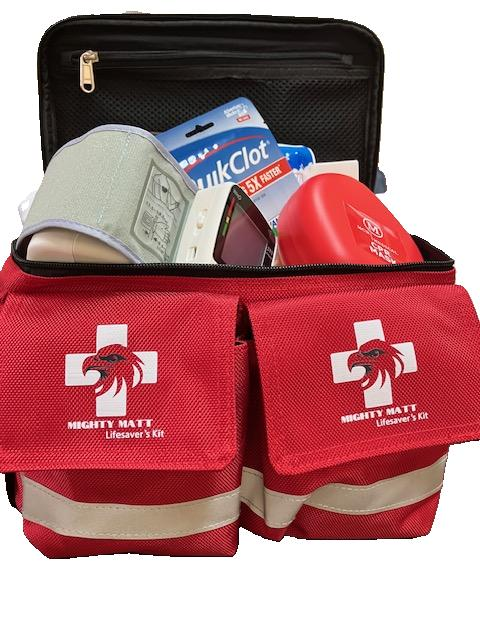

01 / FARM & FIELDYour experience shapes what comes next.
WHY READINESS MATTERS
The work doesn’t stay in one place.
From fields and work vehicles to barns and shops, the workday moves. Appropriate emergency supplies are more useful when they’re accessible where work happens.
Where that is on your operation is something only you can tell us.
MIGHTY MATT GO · REDExisting red GO · Over-the-shoulder format
MEET MIGHTY MATT GO
Portable by design. Shaped by your input.
Mighty Matt GO is the existing over-the-shoulder emergency kit from Eagle Corps Services. We’re exploring whether that format could help bring supplies closer to agricultural work.
01 An over-the-shoulder format
02 The existing red Mighty Matt GO
03 Your farm experience guides what comes next
A different configuration. Mighty Matt GO does not contain the anti-choking device. The full Mighty Matt configuration does.
About a minute. No account needed. Your experience matters.
We’re learning what farmers need—not suggesting that every feature listed is included in Mighty Matt GO.
Your voice, your choice.
Contact details are optional. Public results show counts only, never your name, contact details or written answers.
Loading the farm readiness poll…
HELP SHAPE THE AG EDITION
The next chapter starts with listening.
ECS is exploring how Mighty Matt could better serve agricultural environments. The campaign starts with the existing red Mighty Matt GO and the people who know the work.
“Ag Edition” is a product-discovery concept, not a finalized new product. Your feedback will help determine whether changes to the kit, storage, restocking or training support are needed.

MIGHTY MATT LIFESAVER’S KIT
Two configurations. One commitment to readiness.
The full Mighty Matt Lifesaver’s Kit is distinct from the over-the-shoulder GO configuration and includes the anti-choking device.
How are GO and the full kit different?
GO uses an over-the-shoulder format and does not include the anti-choking device. The larger/full configuration includes it. Confirm the current contents of the configuration you choose with ECS before purchasing.
FIELD NOTES / THE THINKING BEHIND THE KIT
Readiness starts with your people.
Ideas from the ECS papers and the Mighty Matt story, brought into the everyday life of a farm.
01 / EVERYDAY READINESS
A place for the kit. A plan for your people.
Mary Allen’s paper on home first aid begins with a familiar setting: the people and routines closest to us. On a farm, that conversation extends from the house to the working day.
Bring the idea to your farm
Where do people gather before work? Where would they look for supplies? Use those questions to start a conversation about the kit’s location and who keeps it stocked.
Adapted from “Why have a first aid kit” by Mary Allen.
02 / KNOWLEDGE & EQUIPMENT
Make learning part of the plan.
The ECS paper on single-hand tourniquets emphasizes training alongside equipment. That principle gives a farm team a useful conversation to have before choosing supplies.
Start a team conversation
What training has your team completed? What would they like to learn next? Bring those questions to a qualified instructor when planning first-aid education for your operation.
Theme drawn from “single hand tourniquet master file.” This field note does not provide treatment instructions.
03 / THE MIGHTY MATT STORY
A legacy of looking after people.
In his Mighty Matt article, Kennieth D. Allen describes how his father, Richard K. Allen, made the safety of the people around him a priority throughout a career of service.
Read the story behind the mission
Allen connects that example of leadership to the purpose behind Mighty Matt: taking care of your people. For this agricultural campaign, the story starts with listening to the people who know the farm.
Adapted from “Honoring a Legacy of Safety: The Mighty Matt Kit” by Kennieth D. Allen.
Your farm adds the next chapter. Tell us where supplies belong and what support would be useful.